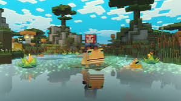
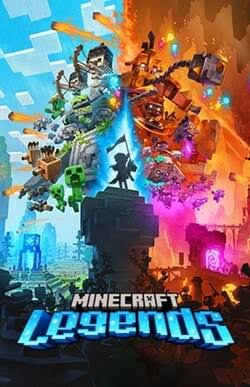

A história de Minecraft Legends é apresentada dentro do universo do jogo como uma lenda épica — um conto folclórico transmitido oralmente de geração em geração entre os aldeões (Villagers). Ela não é tratada necessariamente como um fato histórico absoluto ou ficção pura, mas sim como uma memória mitológica do passado do Mundo Superior (Overworld).
A paz do Mundo Superior é quebrada quando hordas de Piglins emergem de grandes portais vindos do Nether. Liderados por comandantes ferozes e com uma inteligência tática inesperada, os Piglins começam a saquear, destruir vilarejos e espalhar uma corrupção (netherrack e fungos) que ameaça devorar toda a superfície.

Diante da iminente destruição do Mundo Superior, três seres celestiais e misteriosos — Conhecimento (Knowledge), Premonição (Foresight) e Ação (Action) — decidem intervir. Percebendo que não conseguem lutar sozinhos, eles convocam um herói vindo do próprio Mundo Superior para liderar a resistência.
O grande diferencial da jornada é que o herói não luta sozinho e nem segue as regras tradicionais do mundo: • Ele precisa convencer e unir criaturas que historicamente desconfiam umas das outras ou são rivais. • Criaturas como zumbis, esqueletos, creepers e os tradicionais golems são persuadidos a lutar lado a lado com os aldeões e com o herói contra a ameaça comum dos Piglins. • Ao longo da campanha, o herói cavalga por diferentes biomas, destrói os postos avançados e portais dos Piglins, e enfrenta grandes bases de invasão.
Após grandes batalhas estratégicas por todo o mapa, o herói consegue enfraquecer e derrotar os exércitos e líderes dos Piglins, fechando as brechas da corrupção do Nether e salvando a superfície. No cânone geral de Minecraft, os eventos de Legends explicam (de forma lendária) por que certas marcas do passado existem no mundo: portais em ruínas, a dinâmica entre os habitantes e o motivo de os Piglins terem tentado conquistar a superfície antes de se adaptarem ou desaparecerem das grandes crônicas. Mais detalhes e a página oficial do título podem ser conferidos no site da Minecraft Legends ou na enciclopédia da minecraft.fandom.com